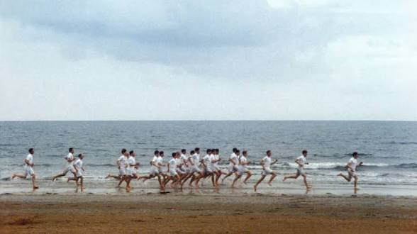

CHARIOTS OF FIRE (1981) — CERTIFIED MGC VF-37

🏛 MGC SUPREME COURT & LOWER CHAMBERS: (MASTER REGISTRY)
- ASSET TITLE: Chariots of Fire (1981) – The Regal British Track Ledger
- OFFICIAL REGISTRY GRADE: Certified MGC VF-37 (Choice Very Fine / Noticeable Production Circulation Wear — Sustained on the Active Ledger)
- JURISDICTION: Dual-Bench Review (Judge Jane, Senior Arbitrator & Judge Tina, Chief of Cult Classics Presiding)
- CASE FILE: #115
- TIER VISUAL ANCHOR: 🏎️ High-Prestige Circulated Alloy
📜 BASELINE BENCH ASSESSMENT: ROOM ALLOCATION ➔ VF-37 CHOICE VERY FINE
Under our strict 5x numismatic magnifying lens, Chariots of Fire strikes the ledger as a highly polished, corporate award-armored vintage alloy. While it possesses an immense surface luster, its structural integrity is permanently capped at the VF-37 line. It is an asset engineered to be respected by stuffy institutional boards, completely stalling out when forced onto a high-velocity independent racetrack.
🚨 THE COMBINED PLANCHET FLAWS (5-FLAW DEFECT MATRIX):
1. The Synthesizer Illusion & Academic Boardroom Static (Tina & Jane Joint Finding)
-
The Defect:
Heavy reliance on a single audio track to mask second-act narrative stagnation. The Forensic Data:
As recorded directly from the master console: “So a guy writes a synthesizer song? Give the film 10 Oscars!” If you strip Vangelis’s iconic keyboard track away from the audio layout engine, the entire production drops its clutch. The narrative experiences massive contact marks, stalling out into a boring, pompous loop of upper-crust British dudes arguing about academic dining etiquette and administrative politics in Cambridge boardrooms.
2. The Repetitive Motion Defect
-
The Defect:
Over-circulation of slow-motion athletic sequences. The Forensic Data:
While visually striking during the iconic beach jog, the slow-motion running layout introduces a highly circulated repetition. By the third track meet, the visual pacing experiences severe fatigue and second-act drag scuffs that leave modern viewers completely cold.
3. The Tonal Anachronism Scuff
The Defect:
Friction between modern electronic elements and the historical backdrop.The Forensic Data:
The intentional pairing of a 1981 electronic synthesizer score against a 1924 period canvas creates an undeniable friction for purists. It injects a temporary surface hyper-glow but leaves a permanent fingerprint that disrupts total historical purity.
4. The Louis Zamperini Real-Endurance Deficit (Judge Jane’s Benchmark)
The Defect:
Paper-thin gentleman’s stakes masquerading as epic human triumph.The Forensic Data:
Judge Jane places the 1924 Paris Olympic squad directly beside real-life 1936 Olympic distance runner Louis Zamperini (Unbroken). While Liddell and Abrahams treat a Sunday heat schedule and a disapproving Cambridge don like life-or-death trials, Zamperini ran the 5,000 meters in Berlin, survived a WWII bomber crash, endured 47 days adrift on a shark-infested Pacific raft, and survived brutal Japanese POW camps. Measured against genuine Olympic grit, Chariots of Fire feels like a polite afternoon tea party at a country club.
5. The Griswold Forensic Structural Impact (1983) (Tina’s Hammer Blow 🔨)
The Defect:
Immediate degradation of prestige value via cultural parody.The Forensic Data:
Let the permanent base ledger reflect the ultimate proof of zero historical structural durability: National Lampoon’s Vacation came out in 1983—exactly two years later—and they literally made fun of it! The moment Clark Griswold sprints across the empty asphalt toward the roller coasters in an absolute slow-motion parody loop complete with a mock synth track, Chariots of Fire’s elite prestige value was exposed as counterfeit. If a Best Picture winner’s signature sequence can be turned into a hilarious joke by the Griswolds just 24 months later, its corporate armor cannot survive real street circulation.
⚖️ FINAL JUDICIAL DECREE
- The lower-court arguments and 5-flaw defect matrix are completely unified. Judge Tina slams her heavy-iron claw hammer from its custom gold mount down onto the steel desk with a deafening structural BOOM that vibrates clear down through the concrete foundations! 🔨💥⚖️
- Case Closed. The British establishment has been officially dismantled, the corporate award armor is shattered, and Chariots of Fire (1981) is permanently sealed into the High-Prestige Circulated Alloy tier at a firm, unyielding Certified MGC VF-37.

• © 2026 MOVIE GRADING CONSENSUS. All Sovereign Rights Reserved.